文档说明：
- OS 版本：Ubuntu 20.04.3 LTS (Focal Fossa)
- skopeo 版本：1.3.0-1
文档目录：
- Skopeo 工具概要
- 使用 Skopeo 认证容器镜像仓库
- Skopeo 支持的容器镜像存储方式
- 使用 Skopeo 操作容器镜像
- 容器镜像格式比较
- 参考链接
Skopeo 工具概要：
- 常用的容器镜像操作工具可使用 docker、podman 命令，但 docker 命令行工具需要使用守护进程与 root 用户权限，在一些场景下使用该工具同步容器镜像的效率是较低的，而 podman 命令虽然不使用守护进程，但是其同步镜像效率依然不高。
- skopeo 与 buildah 命令可专门用于容器镜像的操作，其中 skopeo 命令更加纯粹地用于容器镜像的搬运与容器镜像格式的转换，效率较其他工具更高，但是不具有容器镜像构建的能力。
- Podman 更加侧重于容器的生命周期管理，同时具备部分容器镜像管理与构建功能，而 Buildah 支持分别使用命令行从头构建容器镜像与
Dockerfile或Containerfile的构建方式，同时兼容 Docker 与 OCI 镜像格式。👉 关于 Podman 更加详细的信息可参考之前写的 Podman 容器原理与使用（1）与 Podman 容器原理与使用（2）。
- Skopeo 安装方法可参考 该 GitHub 链接，此处不再赘述。
- skopeo 命令的帮助信息：
1
2
3
4
5
6
7
8
9
10
11
12
13
14
15
16
17
18
19
20
21
22
23
24
25
26
27
28
29
30
31
32
33$ skopeo --help
Various operations with container images and container image registries
Usage:
skopeo [command]
Available Commands:
copy Copy an IMAGE-NAME from one location to another
delete Delete image IMAGE-NAME
help Help about any command
inspect Inspect image IMAGE-NAME
list-tags List tags in the transport/repository specified by the REPOSITORY-NAME
login Login to a container registry
logout Logout of a container registry
manifest-digest Compute a manifest digest of a file
standalone-sign Create a signature using local files
standalone-verify Verify a signature using local files
sync Synchronize one or more images from one location to another
Flags:
--command-timeout duration timeout for the command execution
--debug enable debug output
-h, --help help for skopeo
--insecure-policy run the tool without any policy check
--override-arch ARCH use ARCH instead of the architecture of the machine for choosing images
--override-os OS use OS instead of the running OS for choosing images
--override-variant VARIANT use VARIANT instead of the running architecture variant for choosing images
--policy string Path to a trust policy file
--registries.d DIR use registry configuration files in DIR (e.g. for container signature storage)
--tmpdir string directory used to store temporary files
-v, --version Version for Skopeo
Use "skopeo [command] --help" for more information about a command.
使用 Skopeo 认证容器镜像仓库：
- Red Hat 支持
skopeo命令来管理容器镜像仓库中的镜像。 - Skopeo 可分别用于操作公共（public）与私有（private）容器镜像，对于私有容器镜像需要对容器镜像仓库进行认证。
- Skopeo 与 Buildah 可使用 Podman 保存的认证
token（位于/run/user/<UID>/containers/auth.json），但是无法执行交互式的登录密码输入，因此，若在 skopeo 命令行中指定明文登录密码可在 history 命令历史记录中查看到，存在一定的安全风险，可使用如下以变量形式传递密码的方法优化：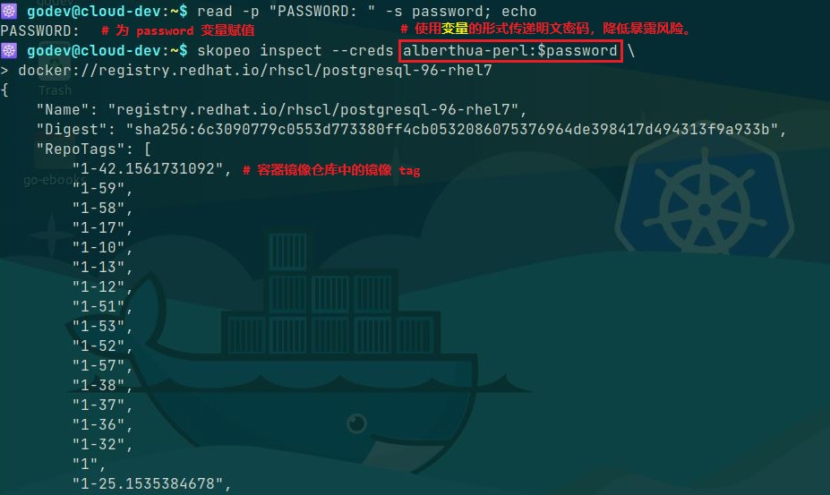若未使用 Podman 作为容器运行时，而依然使用 Docker 容器运行时的话，其认证 token 依然可被 Skopeo 使用与认证，该认证 token 位于
$HOME/.docker/config.json。 - Skopeo 的众多子命令支持容器镜像仓库的认证，可分别通过用户名与密码及认证的 token 文件实现认证，如下所示：
1
2
3
4
5
6
7
8### 示例 ###
$ skopeo copy --src-creds <username>:<password> \
docker://registry.redhat.io/rhscl/postgresql-96-rhel7:latest \
oci:postgresql-96-rhel7-latest
$ skopeo copy --src-authfile /run/user/<UID>/containers/auth.json \
docker://registry.redhat.io/rhscl/postgresql-96-rhel7:latest \
oci:postgresql-96-rhel7-latest
Skopeo 支持的容器镜像存储方式：
- Skopeo 使用
URI来表示容器镜像的位置，使用 URI 模式（schema）来表示容器镜像格式和registry APIs。 - 常见的 URI 模式：
oci：- 表示存储在本地的 OCI 格式目录中的容器镜像
- 该镜像兼容开放容器镜像层规范（
Open Container Image Layout Specification）
oci-archive：- 表示 OCI 镜像格式封装的容器镜像的 tar 归档
- 该镜像兼容开放容器镜像层规范
containers-storage：- 表示存储于本地容器运行时缓存中的容器镜像
- 后端容器引擎兼容 Podman、CRI-O 与 Buildah
docker-daemon：- 表示存储于本地 Docker 容器运行时缓存中的容器镜像
docker-archive：- 表示 Docker 镜像格式封装的容器镜像的 tar 归档
dir：- 本地存储容器镜像的目录，其中以单个文件的方式包含镜像的
manifest、镜像层 tar 归档与各镜像层签名（digest）。
- 本地存储容器镜像的目录，其中以单个文件的方式包含镜像的
docker://：- 表示存储于容器镜像仓库中的远程容器镜像
- 可通过
Docker Registry HTTP API V2操作仓库中的容器镜像
- 同一容器镜像可以根据不同的场景使用以上不同的方式保存。
👉 关于 Skopeo 更为详细的信息可参考
man skopeo手册。
使用 Skopeo 操作容器镜像：
- Skopeo 不使用容器运行时，并且普通用户可直接使用，比 Podman 使用 tag、pull 与 push 等子命令时更加的高效。
- 🐳 若使用 docker 或 podman 命令将容器镜像仓库中的镜像保存于本地存储，需分别使用 docker pull|save 与 podman pull|save 命令将本地镜像缓存中的镜像保存于 tar 归档，无法从容器镜像仓库直接保存于文件或目录中，下文中提及的
skopeo copy或sync子命令可实现该功能，无需存在本地镜像缓存。 🚀 Skopeo 操纵镜像层的方式：
- 出于效率问题，Skopeo 不读取与发送已存在于目标仓库的镜像层，它首先读取源镜像的 manifest，再确定哪些层已存在于目标仓库，然后仅仅拷贝缺失的镜像层。
- 若拷贝来自构建于同一父镜像的镜像，Skopeo 不拷贝多个来自于父镜像的相同镜像层。
Skopeo 可在容器镜像仓库之间拷贝镜像而不在本地容器存储中保存镜像层缓存，若源仓库与目标仓库需要认证，则需要使用
--src-creds与--dest-creds选项指定认证用户与明文密码，并且 Skopeo 支持在目标仓库实现镜像tag。1
2
3
4
5
6$ skopeo copy \
--src-creds=<username>:<password> \
--dest-creds=<username>:<password> \
docker://<uri_for_src_registry>/<user_or_org>/<repository>:[tag] \
docker://<uri_for_dest_registry>/<user_or_org>/<repository>:[tag]
# 分别指定源仓库与目标仓库的认证用户与明文密码，并在仓库间拷贝容器镜像。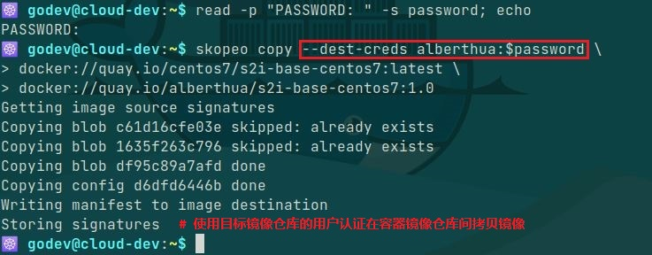
skopeo delete：删除容器镜像的镜像 tag该命令可删除容器镜像仓库中指定镜像的 tag
若删除公共镜像可直接执行无需用户认证，而删除私有容器镜像需使用--creds选项或--authfile选项进行认证后删除，如下所示：1
2$ skopeo delete --creds <username>:<password> \
docker://<uri_for_registry>/<user_or_org>/<repository>:[tag]💥 指定镜像
tag时将删除特定 tag，即使将最后一个 tag 删除后也不删除整个镜像仓库，若需要删除整个镜像仓库需登录指定仓库。此处为 Quay.io 为例，在Web 控制台上删除，如下所示：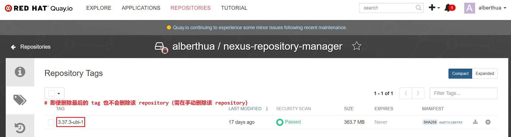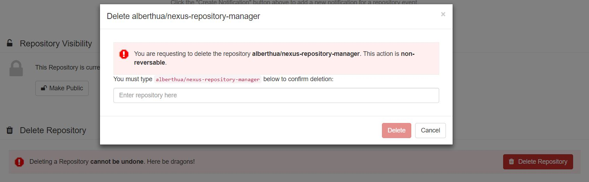- 💥 该命令也可删除本地容器运行时缓存中的镜像 tag，但需注意，若具有多个不同 tag 的容器镜像（实际为同一容器镜像），只具有同一个 image ID（该值来自于镜像的 manifest 中
.config.digest），那么在执行删除时即使指定了镜像的 tag，也会将其他具有相同 image ID 的镜像一并删除，该行为与容器镜像仓库中相区别！
skopeo copy：dir 模式示例💥 Skopeo 可将容器镜像仓库中镜像拷贝至本地镜像目录（该目录无需提前创建），该目录中的镜像封装格式保留原始容器镜像仓库中的镜像格式。
1
2
3$ skopeo copy \
docker://<uri_for_registry>/<user_or_org>/<repository>:[tag] \
dir:<dir_of_container_image>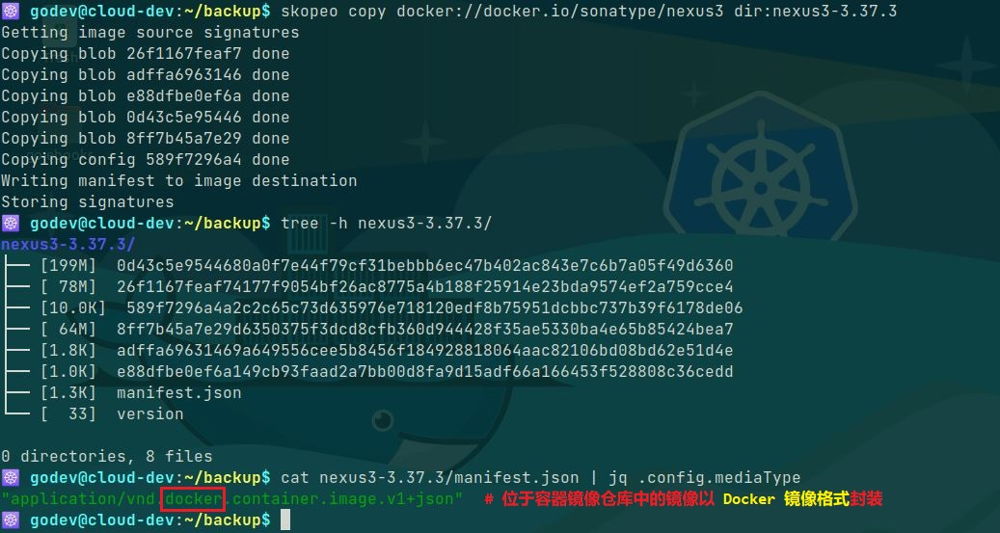除了使用 docker load 或 podman load 直接将容器镜像的 tar 归档导入本地镜像缓存中，也可使用已经保存至本地的目录以 dir 或 oci 模式存在的容器镜像，如下所示：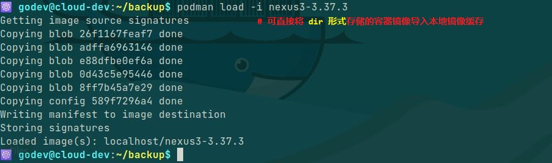
也可以使用 Skopeo 将本地镜像目录拷贝至容器镜像仓库，用以替代 docker push 或 podman push 的功能：
1
2
3$ skopeo copy \
dir:<dir_of_container_image> \
docker://<uri_for_registry>/<user_or_org>/<repository>:[tag]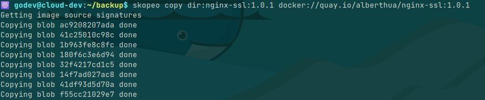
skopeo copy：oci 模式示例
Skopeo 可将容器镜像仓库中镜像拷贝至本地OCI格式目录中以存储镜像：1
2
3$ skopeo copy \
docker://<uri_for_registry>/<user_or_org>/<repository>:[tag] \
oci:<dir_of_container_image>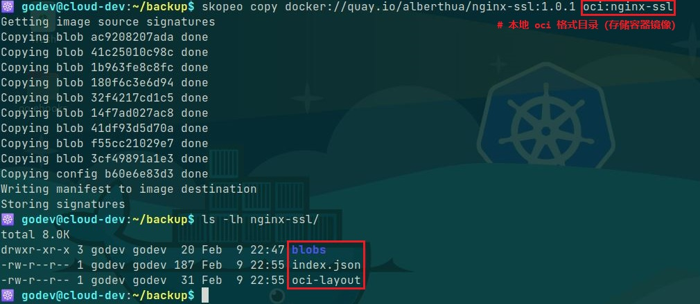其中拷贝至本地的 OCI 格式目录结构如下所示，包含了容器镜像的各层（layer）。
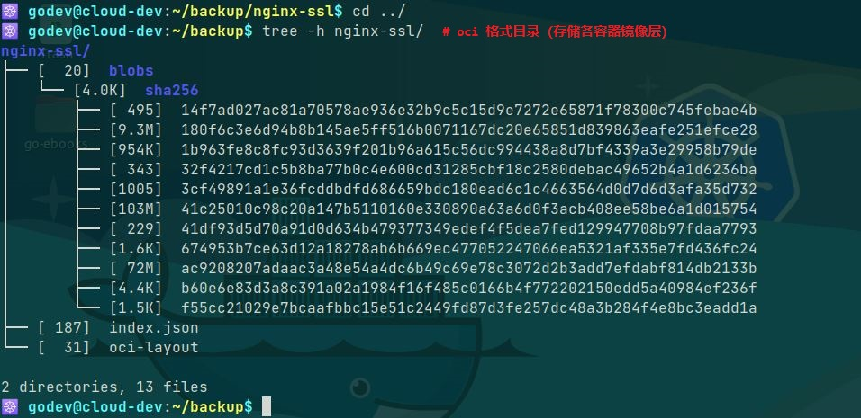也可使用本地 OCI 格式目录将镜像拷贝至容器镜像仓库中。skopeo copy：oci-archive 模式示例1
2
3
4$ skopeo copy \
docker://<uri_for_registry>/<user_or_org>/<repository>:[tag] \
oci-archive:<oci_contaier_image_name>.tar
# 将容器镜像仓库中镜像封装为 tar 归档的 OCI 镜像格式的镜像skopeo copy：containers-storage 模式示例💥 该模式只能在以 Podman 或 CRI-O 为容器运行时的情况下使用，若使用 Docker 容器运行时将报错！
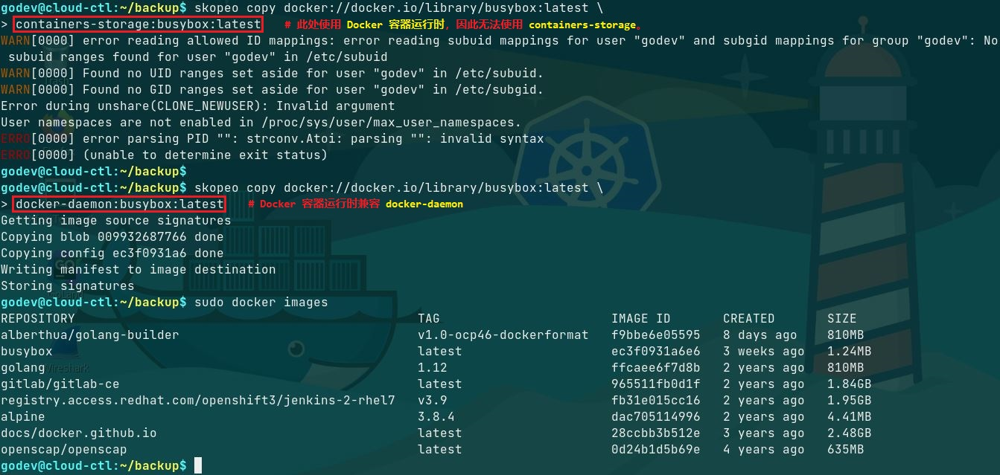
1
2
3
4$ skopeo copy \
docker://<uri_for_registry>/<user_or_org>/<repository>:[tag] \
containers-storage:<uri_for_registry>/<user_or_org>/<repository>:[tag]
# 将容器镜像仓库中的镜像存储于本地镜像缓存skopeo copy：docker-archive 模式示例1
2
3
4$ skopeo copy \
docker://<uri_for_registry>/<user_or_org>/<repository>:[tag] \
docker-archive:<docker_contaier_image_name>.tar
# 将容器镜像仓库中镜像封装为 tar 归档的 Docker 镜像格式的镜像skopeo copy：docker-daemon 模式示例💥 该模式在使用 Docker 容器运行时的情况下使用。
1
2
3
4$ skopeo copy \
docker://<uri_for_registry>/<user_or_org>/<repository>:[tag] \
docker-daemon:<uri_for_registry>/<user_or_org>/<repository>:[tag]
# 将容器镜像仓库中的镜像存储于本地镜像缓存🚀 Skopeo 对容器镜像格式的转换：
- 使用 skopeo copy 命令将容器镜像仓库中镜像拷贝至本地目录或本地 tar 归档存储时，可分别以 Docker 镜像格式或 OCI 镜像格式保存。
- 因此，skopeo copy 命令可同时完成容器镜像的下载与镜像格式的转换。
- 如下所示：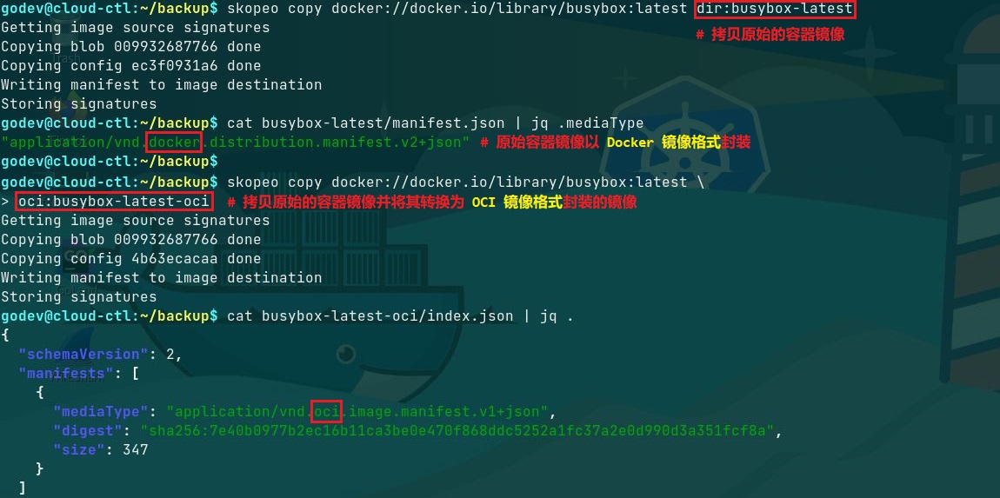
skopeo sync：- sync 子命令将容器镜像从 src 源同步至 dest 目的地，功能与 copy 子命令类似。
- skopeo sync 命令可指定的 src 与 dest 类型如下所示：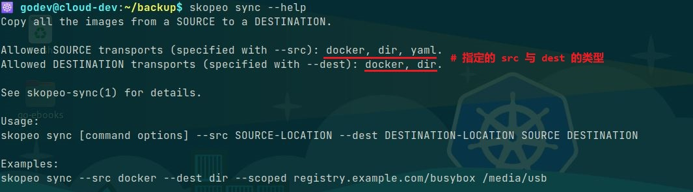
- 👉 示例 1：
将远程容器镜像仓库中的镜像同步至本地目录，本地存储容器镜像的目录无需创建。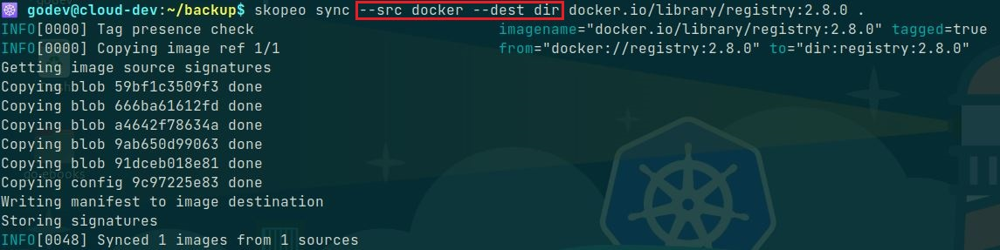 - 👉 示例 2：
skopeo 命令分别使用两个容器镜像仓库的 token 认证文件将容器镜像同步至另一个仓库中，并且目标仓库只需指定仓库URI即可，将自动生成对应的镜像名称与标签。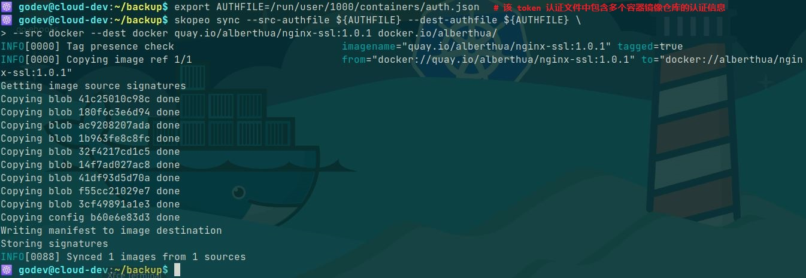 - 也可使用 skopeo sync 命令将本地 dir 模式存储的容器镜像同步至远程容器镜像仓库中。
skopeo inspect与skopeo manifest-digest：- 该命令用于查看详细的容器镜像层信息（image manifest）或容器镜像的配置信息（image config）。
- 🐳 image manifest 包含各镜像层的
mediaType、size、digest，而 image config 包含镜像的其他详细信息。 👉 示例 1：Docker 镜像格式的容器镜像目录
如上所述，使用dir模式存储的容器镜像位于 nexus3-3.37.3 目录中，可直接使用jq命令查看该镜像的 image manifest 与 image config：1
2
3
4
5
6
7
8
9
10
11
12
13
14
15
16
17
18
19
20
21
22
23
24
25
26
27
28
29
30
31
32
33
34
35
36
37
38
39
40
41
42
43
44
45
46
47
48
49
50
51
52
53
54
55
56
57
58
59
60
61
62
63
64
65
66
67
68
69
70
71
72
73
74
75
76
77
78
79
80
81
82
83
84### 示例（以下内容为部分输出） ###
$ jq '.' nexus3-3.37.3/manifest.json
{
"schemaVersion": 2,
"mediaType": "application/vnd.docker.distribution.manifest.v2+json",
"config": {
"mediaType": "application/vnd.docker.container.image.v1+json",
"size": 10193,
"digest": "sha256:1e1d45f195b19d03ec1833561dca6f5c63f9453413247c323c24f2fbcc34bcdd"
},
"layers": [
{
"mediaType": "application/vnd.docker.image.rootfs.diff.tar.gzip",
"size": 81522888,
"digest": "sha256:8dfe9326f733b815c486432e93e0a97f03e90e7cc35def9511cd1efa7f917f56"
},
...
]
}
# 根据 dir 目录中的 manifest 查看容器镜像及各镜像层信息
$ jq '.' nexus3-3.37.3/1e1d45f195b19d03ec1833561dca6f5c63f9453413247c323c24f2fbcc34bcdd
{
"architecture": "amd64",
"config": {
"Hostname": "bb4a731bd39e",
"Domainname": "",
"User": "nexus",
...
"ExposedPorts": {
"8081/tcp": {}
},
"Tty": false,
"OpenStdin": false,
"StdinOnce": false,
"Env": [
"PATH=/usr/local/sbin:/usr/local/bin:/usr/sbin:/usr/bin:/sbin:/bin",
"container=oci",
"SONATYPE_DIR=/opt/sonatype",
"NEXUS_HOME=/opt/sonatype/nexus",
"NEXUS_DATA=/nexus-data",
"NEXUS_CONTEXT=",
"SONATYPE_WORK=/opt/sonatype/sonatype-work",
"DOCKER_TYPE=3x-docker",
"INSTALL4J_ADD_VM_PARAMS=-Xms2703m -Xmx2703m -XX:MaxDirectMemorySize=2703m -Djava.util.prefs.userRoot=/nexus-data/javaprefs"
],
"Cmd": [
"sh",
"-c",
"${SONATYPE_DIR}/start-nexus-repository-manager.sh"
],
"Image": "sha256:bb968737b5d0d7420e5af7c5524cddc16bd2b43a47f8277e00b1461342d40ba5",
"Volumes": {
"/nexus-data": {}
},
...
},
"created": "2022-03-02T23:52:49.682473465Z",
"docker_version": "20.10.9",
"history": [
{
"created": "2022-02-25T17:39:29.754401796Z",
"comment": "Imported from -"
},
...
{
"created": "2022-03-02T23:52:49.682473465Z",
"created_by": "/bin/sh -c #(nop) CMD [\"sh\" \"-c\" \"${SONATYPE_DIR}/start-nexus-repository-manager.sh\"]",
"empty_layer": true
}
],
"os": "linux",
"rootfs": {
"type": "layers",
"diff_ids": [
"sha256:7699752e6ed63eef234d2736d4e37159a433e18e06cd617e254299f324f41797",
"sha256:c8013a2772b6673d9b750b6407d4ac4f525a47bb2a5b5bf09ba9bf8e10aea3fc",
"sha256:5a745ebef99f4893aac7c56a26e54f9c6cdc08b02748e0580b1a31d70be0a280",
"sha256:8d12fc82bf58bf5f7958577a148cc05899f0c19e4654376f5e01d3af46eb0c15",
"sha256:d17e45a4f748d13d0501b9e1bca5be387e13efa8ce98147a85c904a348764f3b"
]
}
}
# 根据容器镜像目录中的 config 文件查看具体的 image config1
2
3
4
5
6
7
8
9
10
11$ skopeo inspect dir:nexus3-3.37.3
# 查看 nexus3 容器镜像的概要信息
$ skopeo inspect --raw dir:nexus3-3.37.3
# 查看 nexus3 容器镜像的 manifest 信息，返回的内容与镜像的 manifest.json 一致。
$ skopeo inspect --config dir:nexus3-3.37.3
# 查看 nexus3 容器镜像的 config 信息，返回的内容与直接查看镜像的配置信息一致。
$ skopeo manifest-digest nexus3-3.37.3/manifest.json
# 查看 nexus3 容器镜像的 manifest.json 文件的 digest 值关于容器镜像目录中
image manifest与其digest的关系，如下所示：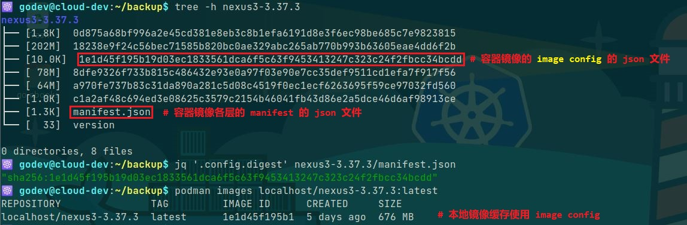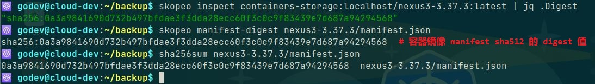- 👉 示例 2：OCI 镜像格式的容器镜像目录
关于容器镜像目录中image manifest与其digest的关系，如下所示：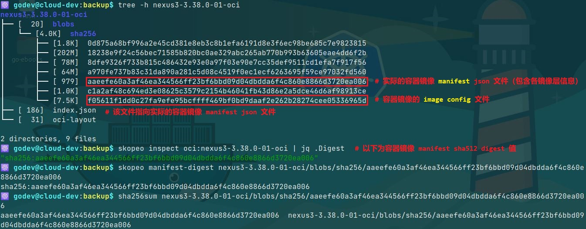
🐳 容器镜像格式比较：
- 对于不同的容器镜像格式，其目录的组织结构存在差异，但彼此间又有联系。
- 目前采用的容器镜像格式：
Docker image format：Docker 镜像格式OCI image format：OCI 镜像格式
- OCI image format 继承于 Docker image format，因此，可运行 OCI image format 镜像的容器运行时也可运行 Docker image format 的镜像。
OCI（Open Container Initiative，开放容器标准）发展概述：- 为了推进容器化技术的工业标准化，2015 年 6 月在
DockerCon上 Linux 基金会与 Google、华为、惠普、IBM、Docker、Red Hat、VMware 等公司共同宣布成立开放容器项目（OCP），后更名为开放容器标准（OCI）。 - 它的主要目标是建立容器格式和运行时的工业开放通用标准。
- 为了支持 OCI 容器运行时标准的推进，Docker 公司起草了镜像格式和运行时规范的草案，并将 Docker 项目的相关实现捐献给了社区，OCI 作为容器运行时的基础实现，现在项目名为
runc。
- 为了推进容器化技术的工业标准化，2015 年 6 月在
- 🤘 发展至今，OCI 制定的主要标准：
runtime-spec：定义容器运行时规范image-spec：定义容器镜像格式规范distribution-spec：定义容器镜像的分发规范
OCI image format 目录说明：
如下所示，以
debian镜像为例：1
2
3
4
5
6
7
8
9$ tree debian-bullseye-20211115-oci
debian-bullseye-20211115-oci
├── blobs
│ └── sha256
│ ├── 468a9be7b68d9b0baf252c3496a6db0a406ba558946d3cfee8f0d2a3be1ec42b
│ ├── 5f2f9939c1839f4fee492777a220cfe1e80cd25008df90af6c2b3b2c30e239c6
│ └── 61ccfad6b52ee974d14b8e3c998d862e7dedd59fa8e0023e6620b213ea6da1ad
├── index.json
└── oci-layoutoci-layout：OCI image 的镜像布局规范，此处使用
OCI 1.0.0版本。1
2
3
4$ jq '.' debian-bullseye-20211115-oci/oci-layout
{
"imageLayoutVersion": "1.0.0"
}index.json：
index.json文件中的manifests字段类似于 Docker image 中的manifest.json作为 OCI image 的顶级配置, 也是镜像的一个入口配置。该文件实际指向
blobs/sha256/468a9be7b68d9b0baf252c3496a6db0a406ba558946d3cfee8f0d2a3be1ec42b，即真正的 OCI image manifest 文件。1
2
3
4
5
6
7
8
9
10
11$ jq '.' debian-bullseye-20211115-oci/index.json
{
"schemaVersion": 2,
"manifests": [
{
"mediaType": "application/vnd.oci.image.manifest.v1+json",
"digest": "sha256:468a9be7b68d9b0baf252c3496a6db0a406ba558946d3cfee8f0d2a3be1ec42b",
"size": 349
}
]
}从该文件的
mediaType可以看出容器镜像格式已发生的变化：1
2
3
4
5
6
7$ jq '.mediaType' debian-bullseye-20211115-docker/manifest.json
"application/vnd.docker.distribution.manifest.v2+json"
# Docker image format 封装
$ jq '.manifests[0].mediaType' debian-bullseye-20211115-oci/index.json
"application/vnd.oci.image.manifest.v1+json"
# OCI image format 封装1
2
3
4
5
6
7
8
9
10
11
12
13
14
15
16$ jq '.' debian-bullseye-20211115-oci/blobs/sha256/468a9be7b68d9b0baf252c3496a6db0a406ba558946d3cfee8f0d2a3be1ec42b
{
"schemaVersion": 2,
"config": {
"mediaType": "application/vnd.oci.image.config.v1+json",
"digest": "sha256:61ccfad6b52ee974d14b8e3c998d862e7dedd59fa8e0023e6620b213ea6da1ad",
"size": 579
},
"layers": [
{
"mediaType": "application/vnd.oci.image.layer.v1.tar+gzip",
"digest": "sha256:5f2f9939c1839f4fee492777a220cfe1e80cd25008df90af6c2b3b2c30e239c6",
"size": 56889206
}
]
}以上文件为 OCI image manifest 文件，其中包含 image config 的信息与各镜像层 Layers 的信息，每层 layer 使用
tar+gzip的方式进行压缩。
- Docker image format 与 OCI image format 的联系与区别：
- 最主要的区别：目录结构不完全相同，配置信息尤其是
mediaType的规范不同。 - 联系：OCI image 的规范是由 Docker image 的规范修改而来，所以类似它们的 blob 的组织形式大致相同，配置文件中很多的参数也相似。
- 另外，可以使用 skopeo 工具很方便地将 Docker image 转换为 OCI image。
- 最主要的区别：目录结构不完全相同，配置信息尤其是
参考链接：
- GitHub Doc - Skopeo
- 镜像搬运工具 Skopeo 使用
- OCI 与容器镜像构建
- GitHub Doc - opencontainers/image-spec
- GitHub Doc - OCI Image Media Types
- GitHub Doc - Open Container Initiative Runtime Specification